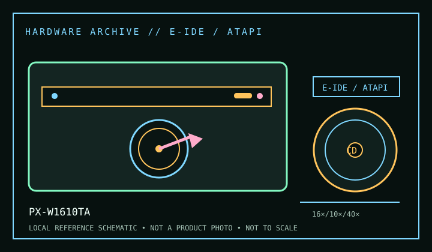

[ CD-R AND CD-RW DRIVES // IDENTIFIED MODEL ]
Plextor PlexWriter 16/10/40A PX-W1610TA
Internal E-IDE/ATAPI CD-R/RW recorder, rated 16× CD-R, 10× CD-RW and 40× CD-ROM read. Confirm the complete label and interface suffix; do not infer that similarly named SCSI or bundle variants share the same host connection.

IDENTIFICATION: Confirm the manufacturer label, complete model suffix, interface and firmware revision against the cited manual before installation or archival use. Ratings are maximums; actual performance depends on media, mode, host and software.
Documented specifications
| Subcategory | CD-R and CD-RW drives |
|---|---|
| Exact model | PX-W1610TA |
| CD-R write | 16× |
| CD-RW rewrite | 10× |
| CD-ROM / CD read | 40× |
| Recorded/read formats | Writes CD-R and CD-RW; reads CD-ROM, CD-ROM XA, CD-DA, Photo CD, CD-I, Video CD and CD+G as documented for the PX-W1610TA family. Disc/session layout and application can limit access to individual formats. |
| Recording modes | Disc-at-Once, Track-at-Once, Session-at-Once, multisession and packet-writing modes are described in period documentation; exact mode availability depends on recording software and media. |
| Interface / mechanics | Internal E-IDE/ATAPI (40-pin host connector); 5.25-inch half-height class. Confirm chassis clearance and exact rear-panel connector before installation. |
| Host and operating-system compatibility | Requires an IDE/ATAPI controller with a functioning optical-device driver and compatible recording software. Contemporary Windows 9x/NT/2000-era applications are typical; on current systems, the legacy authoring stack may be unsupported even if the drive is visible through an adapter. Record the actual controller, OS and application used. |
| Firmware / revision notes | Firmware is revision- and product-variant-specific. Read the label and firmware inquiry before use; never apply an update for PX-W1610S, PX-W1610TA/other suffix or OEM image without an exact match. Media strategy and firmware affect reliable burn speeds. |
Compatibility & preservation notes
- Requires an IDE/ATAPI controller with a functioning optical-device driver and compatible recording software. Contemporary Windows 9x/NT/2000-era applications are typical; on current systems, the legacy authoring stack may be unsupported even if the drive is visible through an adapter. Record the actual controller, OS and application used.
- Firmware is revision- and product-variant-specific. Read the label and firmware inquiry before use; never apply an update for PX-W1610S, PX-W1610TA/other suffix or OEM image without an exact match. Media strategy and firmware affect reliable burn speeds.
- For an imaging or recording session, log the exact drive and firmware, interface/controller, operating system, application version, media identifier, selected mode and any read/verification errors. Keep checksummed image copies and logs.
- Handle discs at the edge or center hole and store in cases in a cool, dry place away from direct sunlight. Avoid adhesive labels, abrasive cleaning and undocumented solvents or polishing.
Read support is not write support. A format listed for this drive does not guarantee every disc revision or copy-protection scheme will work.
Sources
- Plextor PlexWriter manual (PX-W1610 family), Internet Archive OCRArchived manual text; consult specifications, installation, media and operation sections and match suffix.
- Plextor PX-W1610TA Operation Manual, ManualsLibManual scan and page images for installation/operation; confirm the precise labelled variant.
- Library of Congress — CD-R and DVD-R/RW longevityArchival handling and media-care context; it does not certify this drive or guarantee disc life.